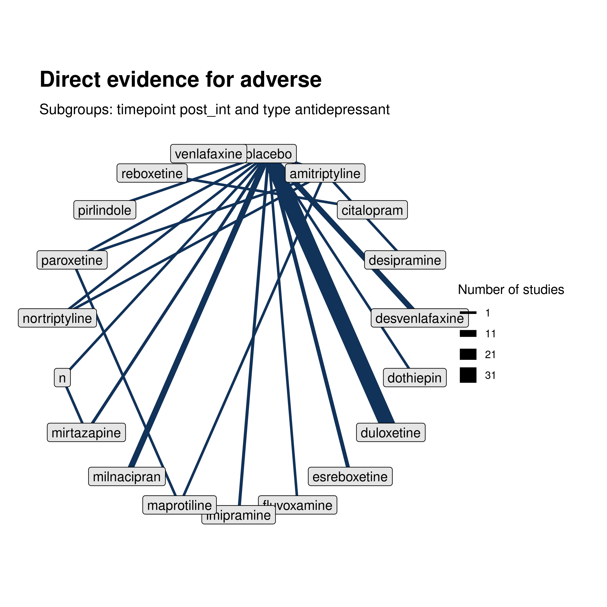
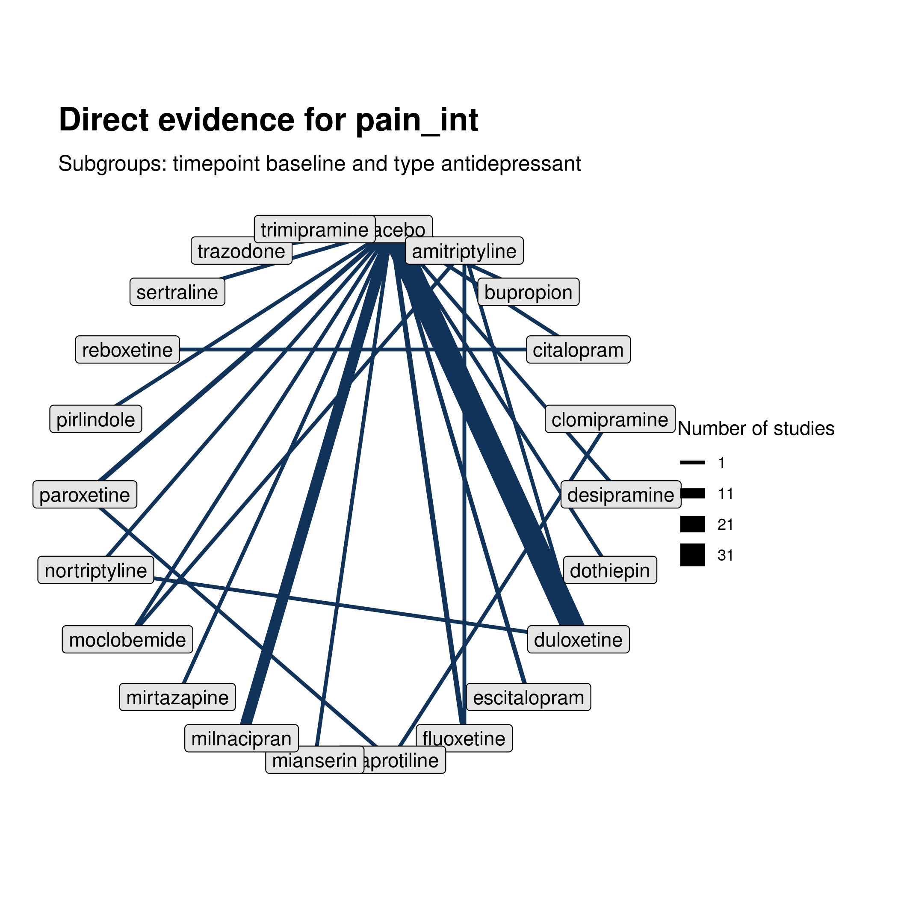
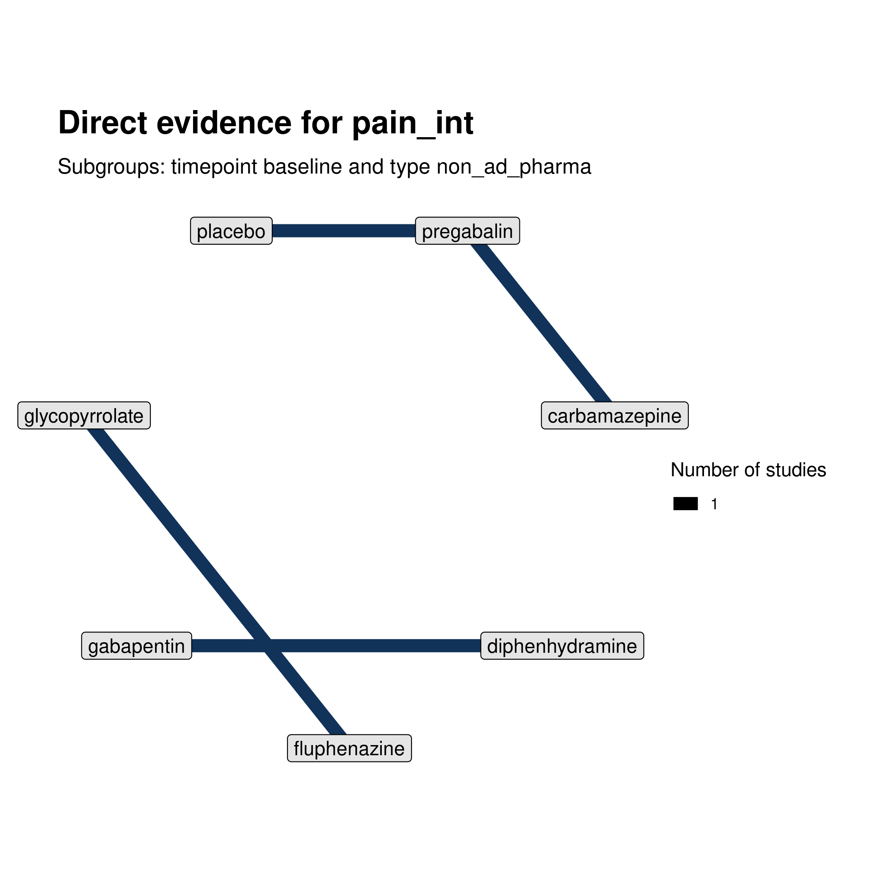
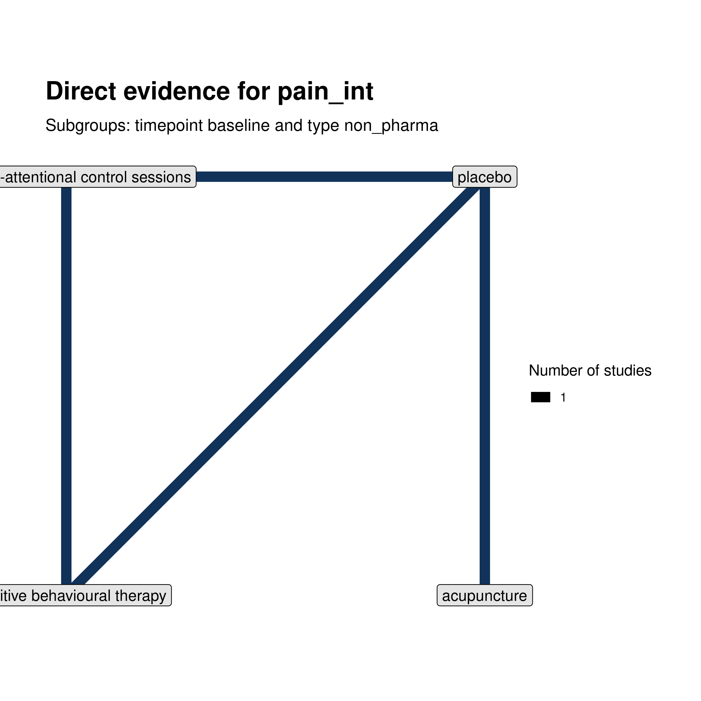
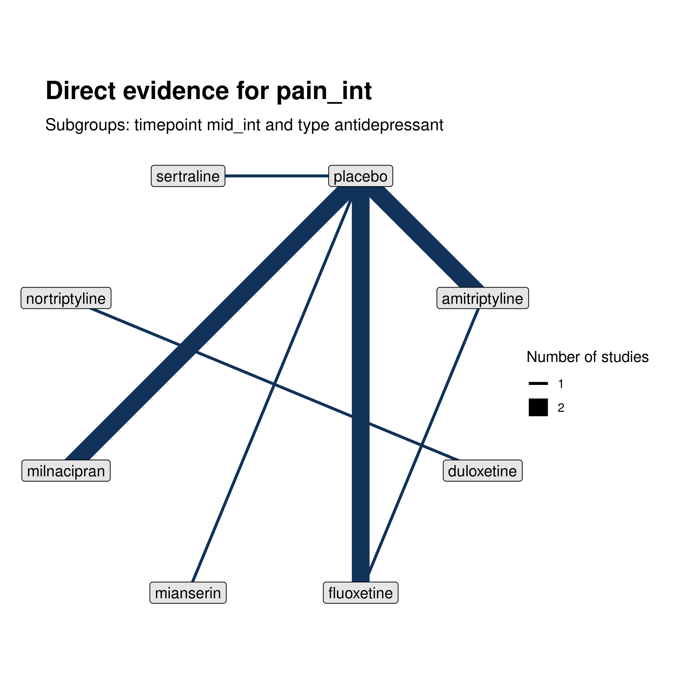
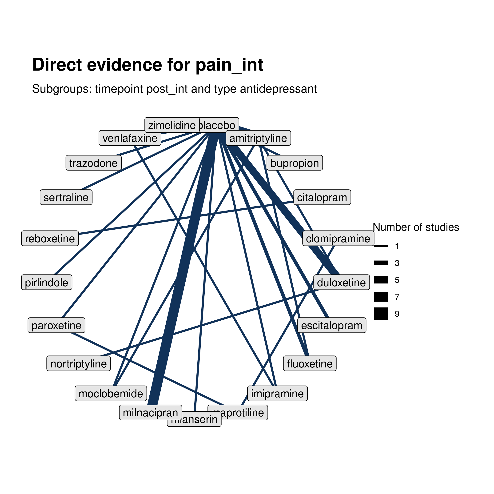
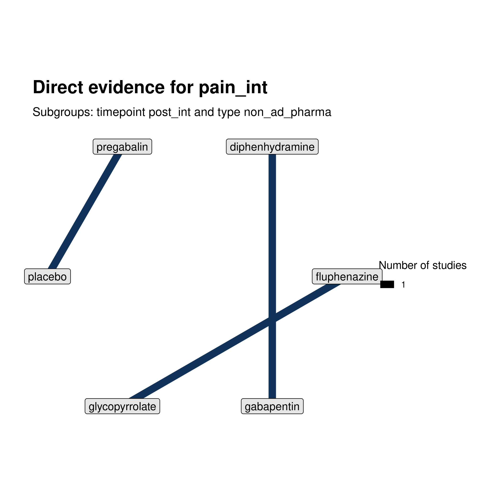

NMA:
Network meta-analysis results across all conditions, classes, and doses.
antidepressant at post_int

non_ad_pharma at post_int
antidepressant at baseline

non_ad_pharma at baseline

non_pharma at baseline

antidepressant at mid_int

antidepressant at post_int

non_ad_pharma at post_int
